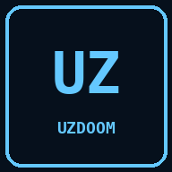

NUXEL DOOM · ENGINE COMPARISON
UZDoom
UZDoom 5.0.3 · native aarch64The modern GZDoom-lineage engine with advanced rendering and mod support. On this vendor-kernel phone it runs with the software renderer because there is no usable /dev/dri node. Compare its map detail and menu depth with Nuxel Doom and Chocolate Doom.
Scanning the read-only WAD catalogue…
- Modern UZDoom source port
- Software renderer for the S10+ kernel
- Native fullscreen WAD launch
- Optional comparison path, not the touch default
No commercial WAD is bundled. Freedoom is free content. Touch HUD is exclusive to Nuxel Doom’s in-app WebAssembly engine; this native comparison engine uses its own keyboard/gamepad bindings.